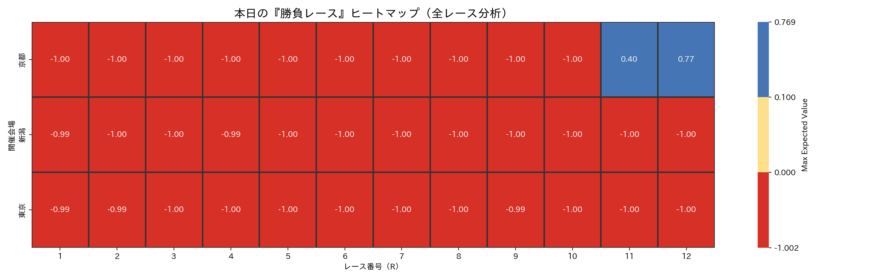
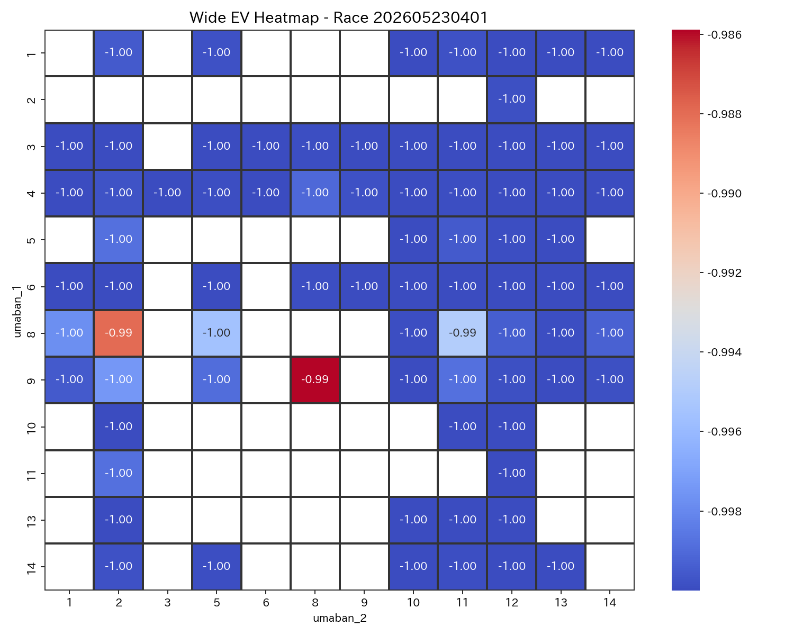
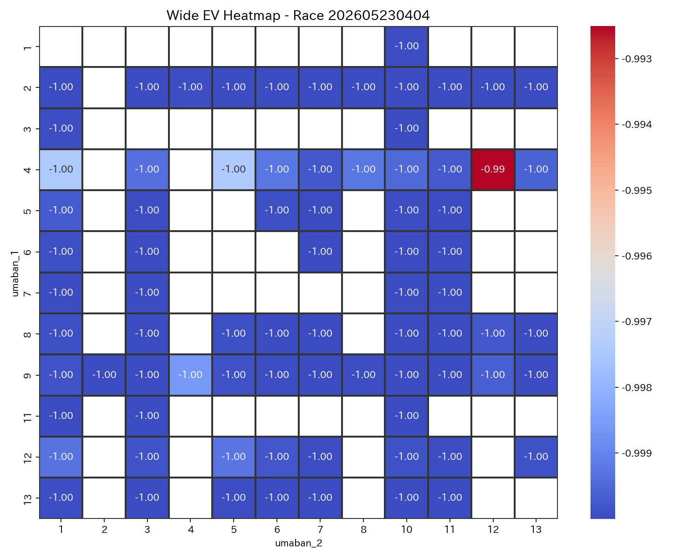
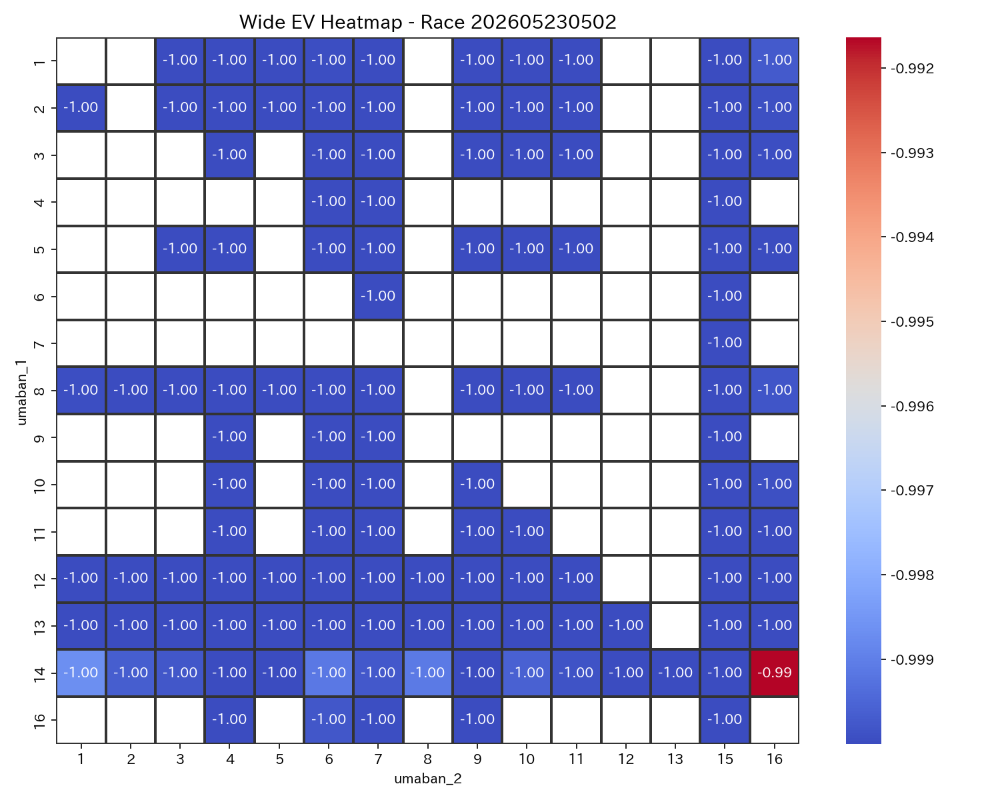
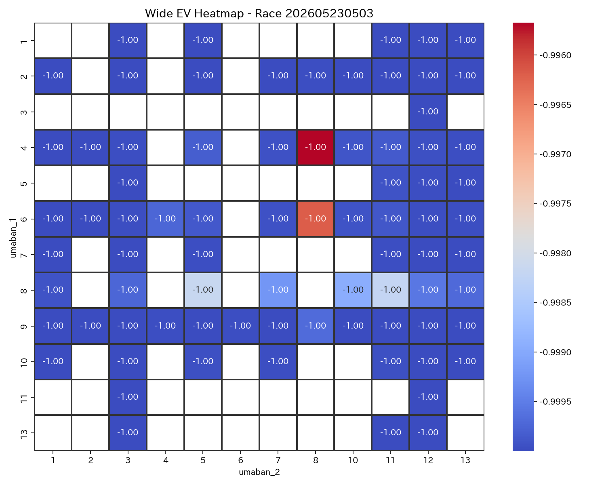
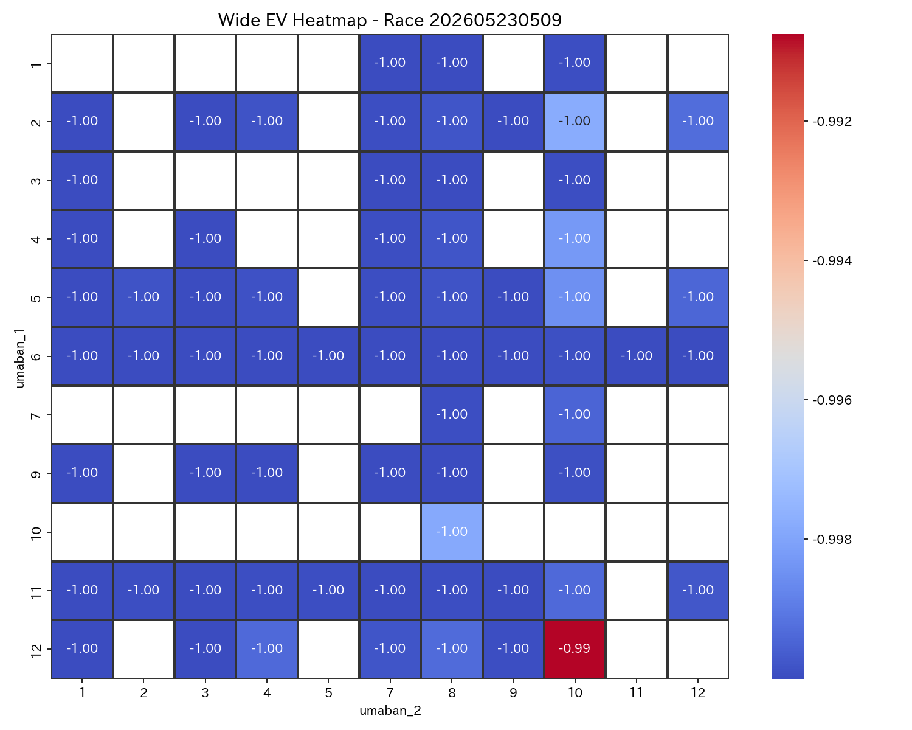
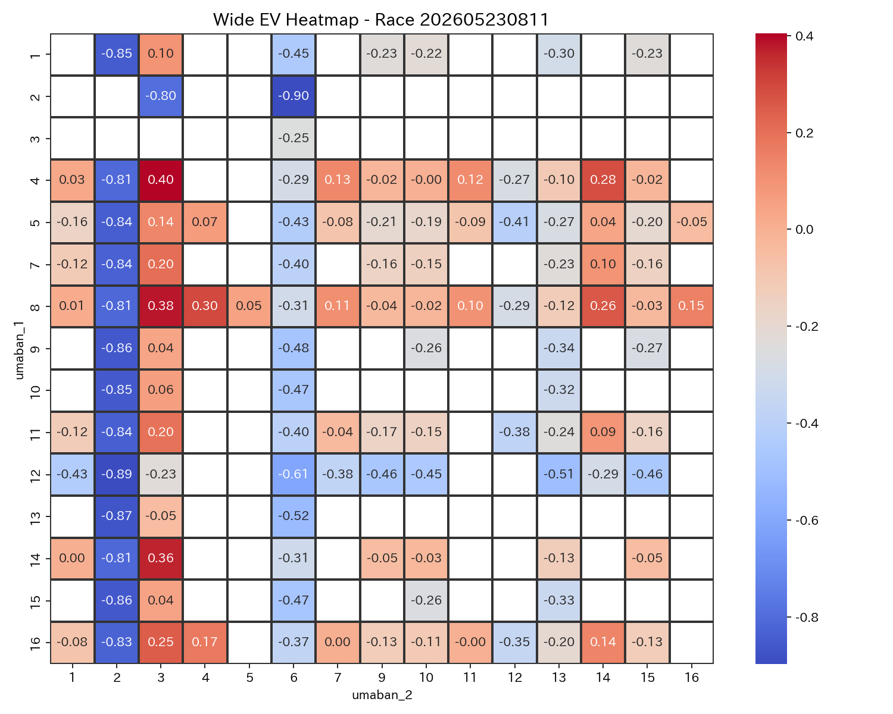
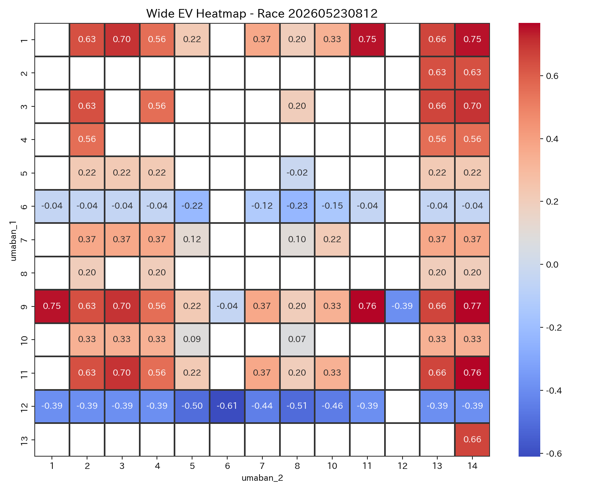

| race_label_ui | race_score | difficulty_score | comment |
|---|---|---|---|
| 京都12R | 0.800000 | 0.478571 | 勝負度が非常に高いレースです。 比較的堅めの決着が期待できます。 本命は 9-14。 EV=0.77, p_hit=0.589 とバランスが良好です。 次点候補は 11-14。 EV=0.76。 適度なリスクで、標準的な賭け方が適しています。 |
| 京都11R | 0.616732 | 0.533177 | 勝負度が高めのレースです。 比較的堅めの決着が期待できます。 本命は 4-3。 EV=0.40, p_hit=0.468 とバランスが良好です。 次点候補は 8-3。 EV=0.38。 適度なリスクで、標準的な賭け方が適しています。 |
| 東京2R | 0.186728 | 0.540899 | 勝負度は低めで、慎重に扱いたいレースです。 比較的堅めの決着が期待できます。 本命は 14-16。 EV=-0.99, p_hit=0.003 とバランスが良好です。 次点候補は 14-1。 EV=-1.00。 適度なリスクで、標準的な賭け方が適しています。 |
| 新潟1R | 0.166965 | 0.381970 | 勝負度は低めで、慎重に扱いたいレースです。 堅い決着が見込まれるレースです。 本命は 9-8。 EV=-0.99, p_hit=0.005 とバランスが良好です。 次点候補は 8-2。 EV=-0.99。 適度なリスクで、標準的な賭け方が適しています。 |
| 新潟4R | 0.163869 | 0.376027 | 勝負度は低めで、慎重に扱いたいレースです。 堅い決着が見込まれるレースです。 本命は 4-5。 EV=-1.00, p_hit=0.001 とバランスが良好です。 次点候補は 9-4。 EV=-1.00。 適度なリスクで、標準的な賭け方が適しています。 |
| 東京3R | 0.163176 | 0.376056 | 勝負度は低めで、慎重に扱いたいレースです。 堅い決着が見込まれるレースです。 本命は 4-8。 EV=-1.00, p_hit=0.001 とバランスが良好です。 次点候補は 6-8。 EV=-1.00。 適度なリスクで、標準的な賭け方が適しています。 |
| 東京9R | 0.156668 | 0.321160 | 勝負度は低めで、慎重に扱いたいレースです。 堅い決着が見込まれるレースです。 本命は 12-10。 EV=-0.99, p_hit=0.003 とバランスが良好です。 次点候補は 2-10。 EV=-1.00。 適度なリスクで、標準的な賭け方が適しています。 |
| race_label_ui | bet_type | selection_ui | umaban_1 | umaban_2 | bet_score | ev | p_hit | odds | return_amount | hit_status | is_nonstarter | is_nonstarter_1 | is_nonstarter_2 |
|---|---|---|---|---|---|---|---|---|---|---|---|---|---|
| 東京9R | wide | 12-10 | 12 | 10 | 0.134995 | -0.990754 | 0.003082 | 1.4 | NaN | 未確定 | 0 | 0 | 0 |
| 東京9R | wide | 2-10 | 2 | 10 | 0.132213 | -0.997780 | 0.000740 | 4.3 | NaN | 未確定 | 0 | 0 | 0 |
| 東京3R | wide | 4-8 | 4 | 8 | 0.134349 | -0.995673 | 0.001442 | 2.9 | NaN | 未確定 | 0 | 0 | 0 |
| 東京3R | wide | 6-8 | 6 | 8 | 0.134146 | -0.996186 | 0.001271 | 1.3 | NaN | 未確定 | 0 | 0 | 0 |
| 東京2R | wide | 14-16 | 14 | 16 | 0.140658 | -0.991637 | 0.002788 | 1.7 | NaN | 未確定 | 0 | 0 | 0 |
| 新潟4R | wide | 4-5 | 4 | 5 | 0.133813 | -0.997377 | 0.000874 | 3.5 | NaN | 未確定 | 0 | 0 | 0 |
| 新潟4R | wide | 4-12 | 4 | 12 | 0.121440 | -0.992505 | 0.001499 | 6.8 | NaN | 未確定 | 0 | 0 | 0 |
| 新潟1R | wide | 9-8 | 9 | 8 | 0.138986 | -0.985877 | 0.004708 | 2.1 | 210.0 | 的中 | 0 | 0 | 0 |
| 新潟1R | wide | 8-2 | 8 | 2 | 0.138174 | -0.987927 | 0.004024 | 2.9 | 290.0 | 的中 | 0 | 0 | 0 |
| 京都12R | wide | 9-14 | 9 | 14 | 0.960000 | 0.767492 | 0.589164 | 63.2 | NaN | 未確定 | 0 | 0 | 0 |
| 京都12R | wide | 11-14 | 11 | 14 | 0.958312 | 0.763230 | 0.587743 | 87.4 | NaN | 未確定 | 0 | 0 | 0 |
| 京都11R | wide | 4-3 | 4 | 3 | 0.779702 | 0.404791 | 0.468264 | 33.2 | NaN | 未確定 | 0 | 0 | 0 |
| 京都11R | wide | 8-3 | 8 | 3 | 0.769738 | 0.379632 | 0.459877 | 48.6 | NaN | 未確定 | 0 | 0 | 0 |
勝負度が非常に高いレースです。 比較的堅めの決着が期待できます。 本命は 9-14。 EV=0.77, p_hit=0.589 とバランスが良好です。 次点候補は 11-14。 EV=0.76。 適度なリスクで、標準的な賭け方が適しています。
勝負度が高めのレースです。 比較的堅めの決着が期待できます。 本命は 4-3。 EV=0.40, p_hit=0.468 とバランスが良好です。 次点候補は 8-3。 EV=0.38。 適度なリスクで、標準的な賭け方が適しています。
勝負度は低めで、慎重に扱いたいレースです。 比較的堅めの決着が期待できます。 本命は 14-16。 EV=-0.99, p_hit=0.003 とバランスが良好です。 次点候補は 14-1。 EV=-1.00。 適度なリスクで、標準的な賭け方が適しています。
勝負度は低めで、慎重に扱いたいレースです。 堅い決着が見込まれるレースです。 本命は 9-8。 EV=-0.99, p_hit=0.005 とバランスが良好です。 次点候補は 8-2。 EV=-0.99。 適度なリスクで、標準的な賭け方が適しています。
勝負度は低めで、慎重に扱いたいレースです。 堅い決着が見込まれるレースです。 本命は 4-5。 EV=-1.00, p_hit=0.001 とバランスが良好です。 次点候補は 9-4。 EV=-1.00。 適度なリスクで、標準的な賭け方が適しています。
勝負度は低めで、慎重に扱いたいレースです。 堅い決着が見込まれるレースです。 本命は 4-8。 EV=-1.00, p_hit=0.001 とバランスが良好です。 次点候補は 6-8。 EV=-1.00。 適度なリスクで、標準的な賭け方が適しています。
勝負度は低めで、慎重に扱いたいレースです。 堅い決着が見込まれるレースです。 本命は 12-10。 EV=-0.99, p_hit=0.003 とバランスが良好です。 次点候補は 2-10。 EV=-1.00。 適度なリスクで、標準的な賭け方が適しています。